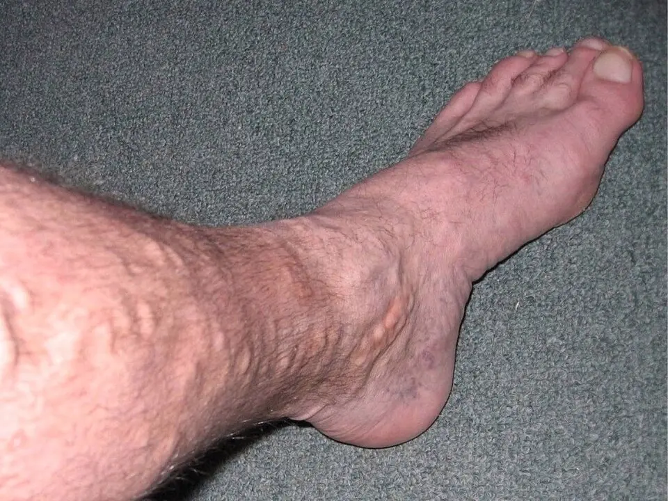
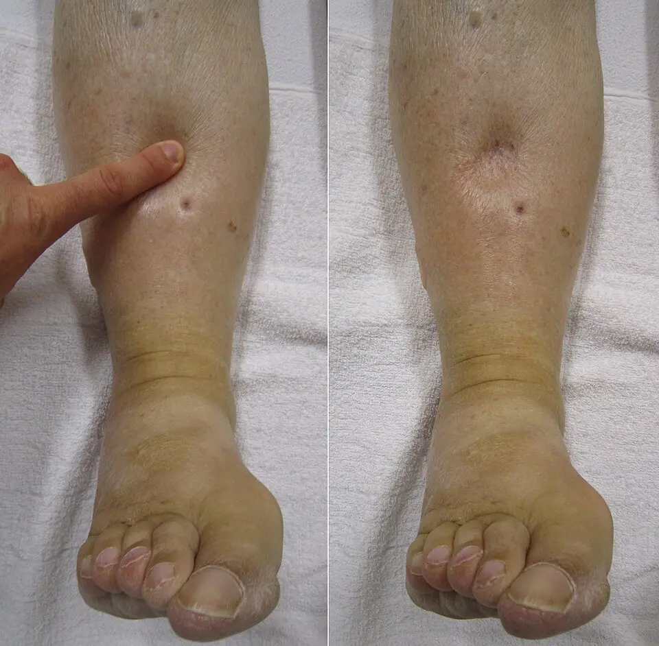
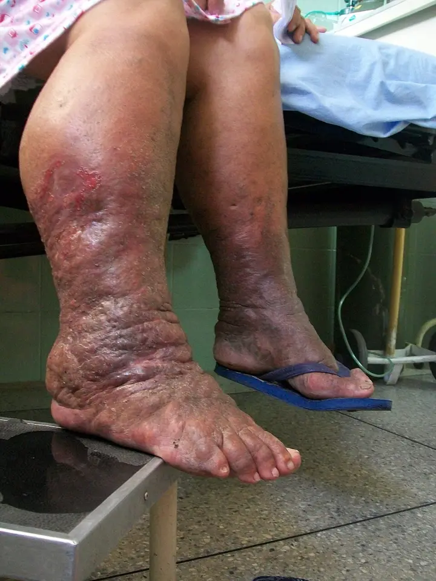
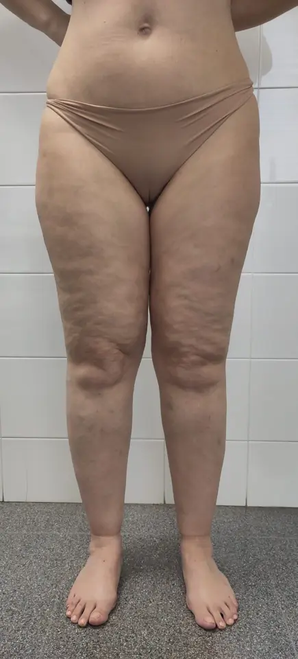
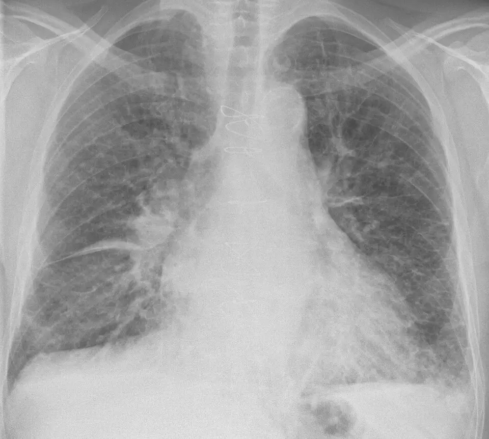

LOT_012 · SSP G12Phase A · situation clinique de départ
Œdème diffus ou localisé
Œdème diffus ou localisé
Bloc 1 — Monographie du SSP G12 en 14 points
1. Définition
Le référentiel suisse PROFILES, qui fixe les objectifs de l'examen fédéral, range l'œdème, diffus ou localisé, parmi les situations de départ générales sous le code G121. L'œdème est une augmentation du volume du liquide interstitiel, qui apparaît lorsque la filtration capillaire dépasse le retour lymphatique vers les vaisseaux2. L'œdème est dit « à godet » lorsque la pression du doigt laisse dans la peau une dépression qui persiste4.
L'œdème est localisé lorsqu'il occupe un seul membre ou un seul segment, et diffus lorsqu'il touche les deux membres ou tout l'organisme2. Une tuméfaction installée en moins de 72 heures est aiguë ; au-delà, elle devient chronique2.
2. Épidémiologie (Suisse, puis Europe)
Le gonflement des jambes amène souvent le patient chez le médecin de famille ; un praticien allemand estime cette part entre 4 et 8 % des cas qu'il prend en charge2. Dans l'étude de Bonn, qui a tiré au sort 3072 adultes de 18 à 79 ans, 13,4 % présentaient un œdème à godet d'origine veineuse5. Cette fréquence atteignait 14,9 % chez les femmes et 11,6 % chez les hommes5.
En Suisse, 12 % des personnes de 15 ans ou plus étaient obèses en 2022, et 31 % étaient en surpoids6. L'insuffisance rénale chronique touchait 10,4 % des 1353 participants d'une enquête menée en 2010–2012 dans les trois régions linguistiques7. Les chiffres de chaque diagnostic gardent leur propre population, car une prévalence en population ne mesure pas la part d'une cause chez le patient œdémateux.
Chaque ligne indique sa population et sa source ; le lecteur ne compare donc que des grandeurs de même nature.
Diagnostic
Donnée chiffrée
Population, lieu, année
DX.1 Insuffisance veineuse chronique
Un œdème veineux à godet (classe C3) touche 13,4 % des adultes ; la classe C4, avec lésions cutanées, en touche 2,9 %5.
Étude de Bonn, 18 à 79 ans, n = 3072
DX.2 Obésité
L'obésité touche 12 % et le surpoids 31 % des personnes de 15 ans ou plus6.
Enquête suisse sur la santé, 2022
DX.3 Insuffisance rénale chronique
La maladie rénale chronique touche 10,4 % de la population, avec une fréquence semblable dans les trois régions7.
Suisse, 2010–2012, n = 1353
DX.4 Insuffisance cardiaque
Une cohorte bernoise a suivi 5824 patients hospitalisés pour insuffisance cardiaque de 2015 à 20198.
Hôpital de l'Île, Berne
DX.5 Œdème médicamenteux
L'œdème touche 16,6 % des patients sous amlodipine contre 6,2 % sous placebo14.
22 essais, n = 7226
DX.6 Thrombose veineuse profonde
La thrombose est confirmée chez 14 % des patients adressés aux urgences pour suspicion10.
Belgique, Canada, France et Suisse, n = 3205
DX.7 Cirrhose
La péritonite bactérienne spontanée touche de 1,5 à 3,5 % des cirrhotiques ascitiques ambulatoires et 10 % des hospitalisés12.
Recommandation européenne EASL, 2018
DX.8 Lymphœdème
La forme primaire représente 1 à 2 % des lymphœdèmes et la forme secondaire 98 à 99 %4.
Revue allemande, 2023
DX.9 Lipœdème
Le lipœdème concernerait au moins 10 % des femmes3.
Article allemand réimprimé dans ARS MEDICI, 2018
DX.10 Hypothyroïdie
Le coma myxœdémateux reste rare et touche surtout le sujet âgé18.
Consensus européen, 2026
Les enjeux de santé publique tiennent aux complications des causes fréquentes. Un syndrome post-thrombotique se développe ainsi chez 15 à 40 % des patients après une thrombose veineuse profonde2. La prééclampsie survient dans 2,31 % des grossesses suivies dans une cohorte suisse prospective de 1300 femmes17.
3. Physiopathologie
À l'état normal, le liquide filtré du capillaire vers l'interstitium équilibre celui que les lymphatiques ramènent vers la circulation2. Cinq perturbations rompent cet équilibre : la pression hydrostatique capillaire s'élève, le volume plasmatique augmente, la pression oncotique baisse, la perméabilité capillaire croît ou le transport lymphatique diminue2. Chaque diagnostic de la liste active au moins un de ces cinq mécanismes.
Le signe de Stemmer et l'imagerie lymphatique le montrent4.
La thérapie décongestive complexe draine la lymphe et réduit la fibrose4.
La nature du liquide dépend du mécanisme, et elle oriente l'examen. L'œdème veineux résulte d'une filtration accrue d'un liquide pauvre en protéines et peu visqueux, ce qui le rend mou et facilement dépressible2. Le lymphœdème accumule au contraire un liquide riche en protéines, qui entretient l'inflammation puis la fibrose du tissu conjonctif4.
La pression oncotique s'effondre lorsque l'albumine sérique descend sous 2 g/dL, soit 20 g/L, seuil sous lequel l'œdème apparaît2. Le rein perd l'albumine dans le syndrome néphrotique, le foie ne la produit plus dans la cirrhose, et l'intestin la laisse fuir dans l'entéropathie exsudative2. Dans le syndrome néphrotique, des protéases urinaires activent en outre le canal sodique épithélial du tubule, ce qui retient le sodium indépendamment de l'albumine19.
Dans la cirrhose, l'hyperaldostéronisme secondaire retient le sel et l'eau, d'où l'association d'une ascite et d'œdèmes déclives2. L'hypothyroïdie dépose dans le derme des glycosaminoglycanes qui fixent l'eau, ce qui donne une induration ferme plutôt qu'un godet2. Le lipœdème associe enfin une hypertrophie des adipocytes, une compression des lymphatiques et une fragilité capillaire qui explique les ecchymoses3.
L'angio-œdème résulte d'une hyperperméabilité brève et localisée du derme profond et des sous-muqueuses15. La bradykinine en est le médiateur sous inhibiteur de l'enzyme de conversion (IEC), alors que l'histamine des mastocytes porte la forme allergique15. Cette distinction commande le traitement, car l'adrénaline, les antihistaminiques et les corticoïdes agissent sur la seule forme mastocytaire15.
4. Démarche diagnostique
Le médecin écarte d'abord une évolution dangereuse ; l'antibiothérapie, l'anticoagulation ou l'hospitalisation peuvent s'imposer dès la première consultation2. Une tuméfaction unilatérale impose donc un bilan le jour même, alors qu'une tuméfaction bilatérale autorise un bilan échelonné sur quelques jours ou semaines2. La décompensation cardiaque ou rénale aiguë fait exception à ce délai, car elle menace à court terme2.
🚩 Les urgences se rangent de E1 à E8. Les quatre premières sont l'angio-œdème des voies aériennes (E1), la thrombose veineuse profonde (E2), la décompensation cardiaque ou rénale (E3) et le syndrome des loges (E4). Les quatre suivantes sont l'érysipèle septique (E5), la prééclampsie (E6), le coma myxœdémateux (E7) et la péritonite bactérienne spontanée (E8). Le tableau discriminant donne ensuite, pour les causes fréquentes, l'élément qui tranche, le piège et la conduite.
Le médecin adresse la patiente au spécialiste vasculaire pour écarter un œdème mixte3.
5. Anamnèse ciblée et drapeaux rouges
L'anamnèse date d'abord le début de la tuméfaction et en précise l'étendue : cheville, jambe, cuisse, dos du pied et orteils2. Le médecin caractérise ensuite l'œdème élément par élément, car chaque réponse déplace la probabilité d'une cause. Il complète par les questions sur le terrain : voyage, immobilisation, traumatisme, essoufflement, poids, cancer et maladies cardio-rénales2.
Le voyage, surtout sous les tropiques, l'infection ou le traumatisme d'un membre, le plâtre et l'immobilisation orientent vers une cause locale2. La capacité d'effort, la dyspnée de repos ou d'effort et l'épuisement physique orientent vers une cause cardiaque2. La fièvre, les sueurs, les troubles mictionnels ou digestifs et la variation du poids complètent le premier entretien2.
Le médecin relève les maladies cardiaques, rénales et cancéreuses, le diabète et une chimiothérapie neurotoxique antérieure2. Il demande aussi la consommation d'alcool et de drogues, car l'alcool mène à la cirrhose2. Après un cancer du sein ou une chirurgie pelvienne, il recherche le curage ganglionnaire et la radiothérapie, causes de lymphœdème secondaire4.
Famille de médicaments
Raison de la question
Inhibiteurs calciques
L'amlodipine triple le risque d'œdème par rapport au placebo, et ce risque est plus élevé à forte dose14.
Anti-inflammatoires non stéroïdiens (AINS)
Le médecin cherche une prise de plus de 1 g d'AINS chaque jour2.
Glitazones, sulfonylurées, insuline
Ces antidiabétiques figurent parmi les causes d'œdème bilatéral2.
Ces molécules figurent dans la même liste des causes médicamenteuses2.
Inhibiteurs de l'enzyme de conversion
Ils causent un angio-œdème, deux fois sur trois dans les 90 premiers jours, mais parfois jusqu'à 10 ans après le début15.
Les drapeaux rouges imposent chacun une action immédiate ; le tableau des drapeaux rouges les relie à leur signification. Le médecin les cherche avant toute hypothèse de cause bénigne, car un œdème banal peut masquer une thrombose qui révèle un cancer2.
Signe recherché. Le médecin cherche une fièvre, une hypertension, une prise de poids et une désaturation ; la température, la pression artérielle et le poids complètent toujours l'examen de l'œdème2.
Technique. Il mesure la saturation au doigt par oxymétrie de pouls, qui fait partie du bilan de base avec l'électrocardiogramme de repos2. Chez la femme enceinte, il mesure la pression à chaque consultation, car une valeur d'au moins 140/90 mmHg après 20 semaines définit l'hypertension gestationnelle16.
Piège. Une hypothermie chez un patient confus n'est pas un détail : elle fait partie du tableau du coma myxœdémateux18.
Signe recherché. L'angio-œdème bradykinique gonfle la face, la muqueuse buccale, la langue, les lèvres, le pharynx et le larynx, le plus souvent de façon asymétrique15. Le myxœdème se manifeste par une induration plane et nodulaire, un érythème et une peau épaissie aux follicules béants2.
Technique. Le médecin fait ouvrir la bouche, observe la langue et le plancher buccal, puis écoute la voix et la respiration. Une atteinte du plancher buccal, de la base de langue ou des voies aériennes supérieures peut mettre la vie en jeu15.
Piège. L'urticaire et le prurit orientent vers la forme mastocytaire, alors que leur absence n'exclut pas la forme bradykinique ; la distinction change le traitement15.
Signe recherché. La pression veineuse jugulaire élevée accompagne les symptômes cardinaux de l'insuffisance cardiaque, avec les crépitants pulmonaires et l'œdème périphérique9.
Piège. L'œdème des jambes sans turgescence jugulaire ni crépitants rend la cause cardiaque moins probable, mais seul le peptide natriurétique l'écarte9.
Le médecin ausculte ensuite le thorax à la recherche de crépitants, puis il examine l'abdomen pour l'ascite et les organes. Il palpe enfin les aires ganglionnaires, car une adénopathie oriente vers un obstacle lymphatique ou une tumeur2.
Signe recherché. Les crépitants pulmonaires comptent parmi les signes physiques de l'insuffisance cardiaque9.
Technique. Le médecin ausculte les deux bases pulmonaires et compare les côtés, car la congestion y apparaît d'abord.
Piège. L'hypertension pulmonaire après des embolies récidivantes ou une apnée du sommeil sévère donne aussi des œdèmes bilatéraux ; la saturation, la polyglobulie et l'échocardiographie la révèlent2.
Technique. Le médecin inspecte l'abdomen, le percute et le palpe à la recherche d'un gros foie ou d'une rate palpable. L'échographie abdominale complète ce temps dans les premiers jours, car elle voit le foie, la rate, les reins et les ganglions profonds2.
Piège. L'ascite de grade 1 échappe à la main, car seule l'échographie la montre12.
Signe recherché. Le médecin observe la symétrie, le siège de la tuméfaction et l'état de la peau, sur le patient dévêtu, debout puis couché4. Il note un érythème, une dermite de stase, un érysipèle et les espaces interdigitaux, où une mycose ou une macération ouvrent la porte aux germes2.
Aspect. La photographie montre la jambe d'un homme de 49 ans : des veines dilatées et sinueuses font saillie sous la peau de la jambe et autour de la cheville25.

La photographie montre des varices de la jambe ; Wikimedia Commons, « Leg Before 1 », domaine public.
Piège. Le lipœdème épargne les poignets, les doigts, les chevilles, le dos du pied et les orteils, alors que le lymphœdème les atteint2.
Signe recherché. Une différence de circonférence de plus de 1 cm entre les deux jambes est déjà considérée comme pathologique2.
Technique. Le médecin mesure les deux membres au mètre ruban, à plusieurs hauteurs repérées, et compare chaque niveau au côté sain4. Il note les valeurs, car elles servent au suivi de la décongestion3.
Piège. Une mesure isolée ne date pas l'œdème ; seule la répétition aux mêmes repères montre la progression ou la réponse au traitement.
Signe recherché. L'œdème est « à godet » lorsque la pression du doigt laisse une dépression qui persiste dans la peau4.
Technique. Le médecin presse du doigt la région prétibiale, puis il observe et palpe l'empreinte ; la dépressibilité distingue l'œdème pauvre en protéines, l'œdème riche en protéines et l'œdème hormonal2.

La photographie montre l'œdème pendant la pression puis l'empreinte qui persiste après le retrait du doigt ; James Heilman, MD, Wikimedia Commons, CC BY-SA 3.0.
Interprétation. L'image montre à gauche le doigt qui enfonce la peau, puis à droite une dépression nette qui reste après le retrait26.
Piège. Le lymphœdème perd son godet en devenant fibreux, et le myxœdème n'en a pas ; l'absence de godet n'écarte donc pas un œdème4.
Signe recherché. Le signe de Stemmer est positif lorsque le médecin ne parvient pas à soulever un pli de peau à la base du deuxième orteil4. Les orteils prennent une forme carrée sous la pression du liquide, ce qui constitue un autre signe du lymphœdème4.
Technique. Le médecin pince la peau dorsale à la racine du deuxième orteil, des deux côtés, puis il compare l'épaisseur du pli.

La photographie montre le lymphœdème de la jambe d'une patiente de 67 ans ; Bobjgalindo, Wikimedia Commons, CC BY-SA 4.0.
Piège. Le lipœdème associe souvent une composante lymphatique qui ne rend pas le signe de Stemmer positif ; un signe négatif n'écarte donc pas une stase lymphatique3.
Signe recherché. Le médecin cherche la douleur à la pression, la chaleur, une phlébite palpable, les pouls du pied et l'état de la sensibilité2. La rougeur, la chaleur et la lymphangite orientent vers l'érysipèle2.
Technique. Il palpe le mollet, compare la température cutanée des deux côtés, puis il palpe les pouls du pied et teste la sensibilité. La douleur à la pression du mollet peut être le signe d'appel de la thrombose2.
Aspect. L'œdème de l'artériopathie oblitérante est mou, épifascial, situé au dos du pied, à la cheville et à la jambe, avec une peau plutôt froide2. L'œdème neuropathique est diffus et peu dépressible, car la neuropathie dilate durablement les artérioles2.

La photographie montre un lipœdème de type III, stade 1, chez une femme de 42 ans ; Jmarchn, Wikimedia Commons, CC BY 4.0.
Piège. La douleur à la pression et la tendance aux ecchymoses appartiennent au lipœdème, alors que l'obésité simple ne les donne pas3. Une peau froide et des pouls absents interdisent la thérapie décongestive, car l'artériopathie avancée la contre-indique4.
7. Approche syndromique
Sept syndromes regroupent les signes de l'œdème ; chacun désigne un mécanisme et un petit nombre de causes. Le tableau les éclate en signes fonctionnels et en signes physiques, et chaque signe renvoie à son geste d'examen.
Syndrome
Signes fonctionnels
Signes physiques
Mécanisme et causes
7.1 Surcharge hydrosodée
Le patient prend du poids et s'essouffle à l'effort.
L'œdème est bilatéral, déclive et dépressible ; la jugulaire peut être turgescente9.
Le volume plasmatique augmente dans l'insuffisance cardiaque, rénale ou médicamenteuse2.
7.2 Hypo-oncotique
Le patient signale une diarrhée chronique, une hépatopathie ou une maladie rénale connue.
Le signe de Stemmer et les orteils carrés apparaissent, puis la fibrose4.
Le drainage lymphatique est lésé par chirurgie, radiothérapie, tumeur ou infection4.
7.5 Lipœdémateux
La patiente décrit lourdeur, douleur et ecchymoses faciles3.
La graisse est disproportionnée et symétrique, et elle épargne les pieds3.
Les adipocytes s'hypertrophient et compriment les lymphatiques3.
7.6 Inflammatoire local
Le patient a de la fièvre et une douleur locale.
Une plaque rouge et chaude s'étend avec une lymphangite2.
La perméabilité augmente dans l'érysipèle ou l'arthrite2.
7.7 Angio-œdémateux
Le gonflement brutal gêne la parole ou la déglutition.
Les lèvres, la langue ou la face gonflent de façon asymétrique15.
La bradykinine ou l'histamine augmentent brièvement la perméabilité15.
8. Diagnostic positif et critères
Le diagnostic positif de l'œdème est clinique : un godet persistant ou une différence de circonférence de plus de 1 cm en apportent la preuve2. Une induration ferme sans godet oriente plutôt vers un œdème riche en protéines ou un myxœdème2. Le diagnostic de cause s'appuie ensuite sur les critères propres à chaque maladie, que réunit la fenêtre des critères par diagnostic.
La classe C3 désigne l'œdème veineux ; la classe C4 ajoute l'eczéma, la pigmentation ou la dermatoliposclérose5.
Des varices seules, sans œdème, relèvent de la classe C25.
Lymphœdème (stades 0 à 3)
Le stade 1 est mou et pâteux, le stade 2 dur et fibreux, le stade 3 éléphantiasique4.
Le stade 0 ne donne encore aucune tuméfaction visible4.
Lipœdème
Le diagnostic reste clinique, car aucun biomarqueur spécifique n'existe13.
Les examens complémentaires servent seulement à écarter les diagnostics concurrents13.
Péritonite bactérienne spontanée (EASL 2018)
Les polynucléaires neutrophiles atteignent 250/mm³ dans l'ascite12.
Une culture positive avec moins de 250/mm³ définit une bactériascite, et non une péritonite12.
Thrombose veineuse profonde
L'échographie de compression montre le thrombus et le dit proximal ou distal11.
Des D-dimères élevés imposent l'échographie mais ne prouvent pas la thrombose10.
Les scores servent à décider, non à étiqueter. Le score de Wells estime la probabilité clinique de thrombose et choisit entre D-dimères et échographie10. Le score de Child-Pugh mesure la gravité de la cirrhose et oriente le bilan hépatique2.
9. Examens complémentaires
9.a Gold standard. Aucun examen ne confirme à lui seul la situation G12 ; chaque hypothèse possède son examen de référence. L'échographie de compression confirme la thrombose, l'échocardiographie confirme l'insuffisance cardiaque et la ponction explore l'ascite11912. Le lipœdème n'a pas d'examen de référence, car son diagnostic reste clinique13.
Indication. Le bilan de routine reste efficace et court ; il comprend les électrolytes, la créatinine, l'urée, l'acide urique et une formule sanguine simple2.
Prescription. Le médecin ajoute la protéine C réactive sensible, la gamma-glutamyl-transférase, l'alanine aminotransférase, les protéines totales, l'INR (rapport international normalisé), la glycémie ou l'hémoglobine glyquée2. La protéine C réactive et les D-dimères existent aussi en test rapide au cabinet2.
Interprétation. La créatinine et les électrolytes orientent vers le rein et surveillent le diurétique ; les enzymes hépatiques et l'INR orientent vers le foie ; la protéine C réactive oriente vers l'infection2.
Indication. La thyréostimuline (TSH) fait partie du bilan de base de l'œdème, idéalement en test rapide le jour même2.
Prescription. Devant un myxœdème, il prescrit la TSH, la T3 et la T4 libres, l'échographie thyroïdienne, et selon le cas les anticorps anti-thyroperoxydase et anti-récepteur de la TSH2.
Interprétation. Une hyperthyroïdie tachycarde peut aussi décompenser le cœur et donner des œdèmes2.
Indication. Le médecin dose les protéines totales et l'albumine devant un œdème mou et diffus, car l'hypoalbuminémie en est un mécanisme direct2.
Interprétation. L'œdème apparaît lorsque l'albumine descend sous 20 g/L2. Une albumine basse avec protéinurie oriente vers le rein, avec enzymes hépatiques anormales vers le foie, et avec diarrhée chronique vers l'intestin2.
Piège. La malnutrition et la malabsorption abaissent aussi l'albumine, sans maladie rénale ni hépatique2.
Indication. Le statut urinaire et la recherche de microalbuminurie font partie du bilan de l'œdème d'origine rénale2. Le sédiment et le dosage de la protéinurie orientent vers le syndrome néphrotique, que le néphrologue explore ensuite2.
Interprétation chez la femme enceinte. Une bandelette à 1+ ou plus est confirmée par un rapport protéines sur créatinine d'au moins 30 mg/mmol16. Une protéinurie d'au moins 0,3 g sur 24 heures la confirme aussi16.
Piège. La bandelette seule ne pose pas la protéinurie ; la quantification la confirme avant toute conclusion16.
Électrocardiogramme de repos et oxymétrie de pouls
Indication. L'électrocardiogramme de repos et la saturation au doigt complètent le bilan de base de tout œdème2.
Interprétation. Une fibrillation auriculaire récente peut décompenser une insuffisance cardiaque et faire apparaître des œdèmes bilatéraux2. Une désaturation oriente vers la congestion pulmonaire ou l'embolie.
Indication. Le médecin mesure les D-dimères par un test très sensible si la probabilité de Wells n'est pas haute10.
Interprétation. Le seuil classique est de 500 µg/L ; dès 50 ans, le seuil ajusté correspond à l'âge multiplié par 10 µg/L10. Les 161 patients exclus entre ces deux seuils sont restés sans événement thromboembolique10.
Bénéfice chiffré. Après 75 ans, le seuil ajusté a porté la part de tests négatifs de 8,7 % à 26,1 %, sans faux négatif10.
Piège. Un test positif ne prouve rien ; il impose l'échographie de compression10.
Piège. Chez le diabétique sans symptôme, le consensus suisse emploie d'autres seuils : la maladie est probable dès 300 ng/L et possible de 125 à 299 ng/L9.
Indication. La recommandation européenne indique une ponction devant toute ascite nouvelle de grade 2 ou 3, et tout cirrhotique hospitalisé pour une aggravation de l'ascite ou une complication12.
Prescription. Le médecin demande le compte des polynucléaires neutrophiles et la culture ; il ensemence au lit au moins 10 mL de liquide dans des flacons d'hémoculture12.
Radiographie du thorax : cliché de référence de la congestion
Rôle. Ce cliché illustre la congestion pulmonaire que suggèrent les crépitants chez le patient œdémateux et dyspnéique.

Radiographie thoracique de face d'un homme de 83 ans dyspnéique ; Mikael Häggström, Wikimedia Commons, CC0.
Interprétation. L'auteur décrit des lignes B de Kerley nettes, un cœur augmenté de volume, des vaisseaux pulmonaires un peu dilatés et un petit épanchement pleural24.
L'auteur du cliché indique que ces lignes B de Kerley sont nettes24. Sur l'image, elles se voient comme de fines lignes courtes et horizontales à la périphérie des bases, au contact de la plèvre.
Le cœur augmenté de volume et les vaisseaux dilatés complètent le tableau de surcharge chez ce patient opéré de pontages coronariens24.
Piège. Un cliché normal n'écarte pas l'insuffisance cardiaque ; le peptide natriurétique et l'échocardiographie restent les examens qui tranchent9.
Indication. L'assurance rembourse ce test dès 20 semaines si des signes font suspecter une prééclampsie sans en remplir les critères16. Un œdème important, y compris du visage, avec une prise de plus de 1 kg par semaine figure parmi ces signes16.
Interprétation. Entre 24 et 36 semaines et 6 jours, un rapport de 38 ou moins écarte la prééclampsie de la semaine suivante avec une valeur prédictive négative de 99,3 %16. Un rapport supérieur à 85 avant 34 semaines, ou à 110 après, est plus spécifique du diagnostic16.
Piège. Un rapport bas ne doit pas faire écarter une prééclampsie qui remplit déjà les critères cliniques16.
9.c Alternatives. Les situations particulières modifient le choix ou la lecture des examens, comme le résume la fenêtre des examens selon le terrain.
Le rapport sFlt-1/PlGF aide à écarter la prééclampsie lorsque les critères manquent16.
Âge de 50 ans ou plus
Le seuil des D-dimères vaut l'âge multiplié par 10 µg/L10.
Diabétique sans symptôme
Le consensus suisse dose le peptide natriurétique une fois par an et emploie des seuils propres9.
Lymphatiques profonds à explorer
La lymphographie par fluorescence ne voit qu'à 1 cm de profondeur ; la lymphographie par IRM explore donc la cuisse4.
9.d Deuxième intention. L'échocardiographie suit un peptide élevé, et la tomodensitométrie abdomino-pelvienne suit un lymphœdème inexpliqué92. Le bilan hépatique élargi comprend les sérologies des hépatites, les marqueurs auto-immuns, l'électrophorèse des protéines et le stade de Child-Pugh2. Un hypercorticisme, qui s'accompagne d'œdèmes dans environ 60 % des cas, se cherche par le cortisol urinaire de 24 heures ou le test à la dexaméthasone2.
Indication. Devant un lymphœdème, le médecin fait exclure une thrombose par échographie, puis il explore les ganglions inguinaux, pelviens et para-aortiques par tomodensitométrie2.
Interprétation. Des adénopathies ou une masse pelvienne orientent vers un obstacle tumoral, cause grave hors liste (G5)2. La lymphographie par IRM montre les lymphatiques avec une exactitude supérieure à 90 %, et elle sert surtout à planifier la chirurgie4.
Le tableau d'interprétation réunit les résultats qui changent la conduite ; chaque seuil y garde sa source.
Résultat
Signification
Conduite
Les D-dimères sont sous le seuil, ajusté à l'âge dès 50 ans10.
La thrombose est exclue si la probabilité n'est pas haute.
Le médecin cherche une autre cause sans échographie.
Le médecin cherche une protéinurie, une hépatopathie ou une entéropathie.
Le rapport protéines sur créatinine atteint 30 mg/mmol chez une femme enceinte hypertendue16.
La protéinurie de la prééclampsie est confirmée.
La patiente relève de l'obstétrique.
Les neutrophiles de l'ascite atteignent 250/mm³12.
Une péritonite bactérienne spontanée est présente.
Le médecin débute l'antibiotique.
10. Arbre décisionnel
L'arbre écarte d'abord les urgences E1 à E8, puis il sépare l'œdème unilatéral de l'œdème bilatéral, puis il désigne l'examen qui tranche. Chaque nœud nomme un signe, un examen ou un geste ; le médecin passe au nœud suivant seulement si la condition manque.
N0 — Voies aériennes. Si la langue, le plancher buccal ou le larynx gonflent, le médecin sécurise les voies aériennes et appelle le 144 (E1)15. Si une urticaire et une hypotension signent l'anaphylaxie, il injecte l'adrénaline par voie intramusculaire22. Si le patient prend un IEC, il l'arrête, car l'angio-œdème bradykinique ne répond pas à l'adrénaline15.
N1 — Jambe unilatérale aiguë. Si un seul membre gonfle, le médecin calcule le score de Wells, puis il dose les D-dimères ou demande l'échographie le jour même (E2)10. Si une thrombose est confirmée, il anticoagule et prescrit la compression11.
N2 — Jambe gonflée après traumatisme. Si la jambe gonfle après une chute ou une contusion, un syndrome des loges menace, et le médecin hospitalise pour un diagnostic en urgence (E4)2.
N3 — Plaque inflammatoire. Si la plaque est rouge, chaude et fébrile, l'érysipèle est probable. Le médecin le traite par l'amoxicilline-acide clavulanique, avec la céfazoline ou la clindamycine comme alternatives, pendant 5 à 7 jours au plus30. Une septicémie impose les hémocultures et l'hôpital (E5)2.
N4 — Dyspnée. Si l'œdème s'accompagne d'une orthopnée ou d'une désaturation, le médecin mesure la saturation et dose le peptide natriurétique (E3)9. Un œdème pulmonaire aigu reçoit le furosémide intraveineux selon l'AIPS21.
N5 — Grossesse. Si une femme enceinte de 20 semaines ou plus a une pression d'au moins 140/90 mmHg, une prééclampsie est possible (E6)16. Le médecin recherche alors la protéinurie et l'atteinte d'organe, puis il l'adresse à l'obstétrique.
N6 — Hypothermie et confusion. Si un œdème ferme s'associe à une hypothermie et à une confusion, le patient rejoint les soins intensifs (E7). Il reçoit d'emblée un glucocorticoïde à dose de stress18.
N7 — Ascite fébrile. Si un cirrhotique ascitique devient fébrile ou douloureux, le médecin ponctionne l'ascite ; 250 neutrophiles/mm³ imposent l'antibiotique (E8)12.
N8 — Œdème bilatéral chronique. Si l'œdème est symétrique et chronique, le médecin revoit d'abord les médicaments, puis il dose la créatinine, l'albumine, la TSH, les enzymes hépatiques et la protéinurie2. Un NT-proBNP inférieur à 125 ng/L écarte la cause cardiaque9.
N9 — Signes locaux. Si des varices et une dermite de stase accompagnent l'œdème, l'insuffisance veineuse est probable (DX.1)2. Si le signe de Stemmer est positif, le lymphœdème l'est (DX.8)4. Si la graisse est douloureuse et épargne les pieds, le lipœdème l'est (DX.9)3.
N10 — Œdème de déclivité. Si aucun nœud ne s'applique chez un patient obèse, le médecin retient l'œdème de déclivité (DX.2) et le réévalue après la prise en charge du poids.
11. Prise en charge selon les recommandations suisses
11.A But. Le traitement vise d'abord la cause, puis la réduction du volume du membre et la prévention des complications. Chez le cirrhotique, la recommandation européenne limite la perte de poids sous diurétique à 1 kg par jour en présence d'œdèmes périphériques et à 0,5 kg sans œdème12. Ce plafond évite la contraction du volume plasmatique, l'insuffisance rénale et l'hyponatrémie12.
11.B Moyens. Les formes compliquées reçoivent d'abord la conduite chronologique d'urgence. Le traitement dépend ensuite du type de liquide. L'œdème aqueux et pauvre en protéines réagit bien à la restriction sodée et aux diurétiques, alors que le lymphœdème y réagit peu et le lipœdème pas du tout2.
Angio-œdème, minute 0. Le médecin évalue la langue, le plancher buccal et la respiration, puis il sécurise les voies aériennes si nécessaire15.
Angio-œdème, minutes 1 à 15. Si l'anaphylaxie est probable, l'adulte reçoit 0,3 mg d'adrénaline intramusculaire ; une seconde dose peut suivre 5 à 15 minutes plus tard si l'effet manque22.
Angio-œdème bradykinique. Le médecin arrête l'IEC ; les symptômes régressent habituellement en 24 à 48 heures après l'arrêt15. Dans l'angio-œdème héréditaire par déficit en inhibiteur de la C1 estérase, l'icatibant traite la crise selon l'AIPS23.
Œdème pulmonaire aigu, minute 0. Le médecin administre 40 mg de furosémide par voie intraveineuse lente21.
Œdème pulmonaire aigu, minute 20. Si l'état le nécessite, une nouvelle injection de 20 à 40 mg suit 20 minutes plus tard21. La voie intramusculaire n'est pas indiquée dans l'œdème pulmonaire, et l'injection ne dépasse pas 4 mg/min21.
Coma myxœdémateux, première heure. Le patient rejoint les soins intensifs, et le traitement débute sur la seule suspicion clinique18. Il reçoit 100 mg d'hydrocortisone i.v., puis 50 mg quatre fois par jour, selon le consensus européen1831. L'AIPS de Solu-Cortef® retient l'insuffisance corticosurrénalienne aiguë parmi ses indications31.
Lévothyroxine. La lévothyroxine injectable est absente de l'AIPS : aucun produit intraveineux ne figure au corpus AIPS suisse. Le consensus indique une dose de charge de lévothyroxine i.v. de 200 à 400 µg, ou de 100 à 200 µg chez le sujet âgé ou coronarien18.
L'ordre du traitement découle de la cause. La thrombose reçoit l'anticoagulation, le plus souvent par anticoagulant oral direct, avec une compression élastique11. L'insuffisance veineuse reçoit une décongestion initiale puis une compression permanente, et la varice fait discuter la chirurgie2. Le lymphœdème de stade 2 ou 3 reçoit une thérapie décongestive complexe avec des bas sur mesure2.
La thérapie décongestive complexe repose sur cinq piliers : soins de peau, drainage lymphatique manuel, compression, exercice décongestionnant et autotraitement4. Elle se déroule en deux phases : une phase quotidienne normalise l'excès de liquide, puis une phase d'entretien conserve le résultat4.
La décompensation cardiaque, la thrombose veineuse profonde, l'artériopathie avancée et l'érysipèle aigu la contre-indiquent de façon absolue4. Dans les œdèmes cardiaques et rénaux, elle reste possible avec un début prudent, une fois les contre-indications vérifiées2.
Le bas plat tricoté sur mesure répartit mieux la pression que le bas circulaire standard, qui peut étrangler le membre à certains niveaux3. Après six mois de traitement conservateur bien conduit sans résultat, le patient est adressé à un centre de chirurgie lymphatique4.
Les diurétiques de l'anse traitent l'œdème rénal, avec une restriction sodée surveillée par le débit de filtration, les électrolytes et la pression artérielle2. Dans la cirrhose, le médecin associe le diurétique de l'anse à un antagoniste de l'aldostérone, comme la spironolactone2. Le tableau des médicaments indique les doses de l'information professionnelle suisse (AIPS). Les fiches du furosémide, de l'adrénaline, de l'icatibant et de l'amoxicilline-acide clavulanique détaillent chaque molécule.
L'AIPS contre-indique l'anurie, le coma et le précoma hépatiques, l'hypokaliémie ou l'hyponatrémie sévères, l'hypovolémie, la déshydratation, l'hypersensibilité au furosémide ou aux sulfamides et l'allaitement20.
Furosémide, Lasix® injectable (Swissmedic 30630)
L'adulte reçoit 20 à 40 mg i.v. ou i.m., puis 20 mg de plus toutes les 2 heures si l'effet manque21.
L'AIPS contre-indique l'anurie, le coma et le précoma hépatiques, l'hypokaliémie ou l'hyponatrémie sévères, l'hypovolémie, la déshydratation, l'hypersensibilité au furosémide ou aux sulfamides et l'allaitement21.
Adrénaline, Epipen® (Swissmedic 53836)
L'adulte et l'enfant de plus de 30 kg reçoivent 0,3 mg intramusculaire22.
Une seconde dose suit après 5 à 15 minutes si l'effet manque22.
Aucune contre-indication absolue n'existe en cas d'allergie menaçant la vie22. L'hypertension, la coronaropathie, l'arythmie, l'hyperthyroïdie, le glaucome à angle fermé et le phéochromocytome exposent à des effets sévères22.
Icatibant, Firazyr® (Swissmedic 58178)
L'adulte reçoit 30 mg par voie sous-cutanée ; une deuxième injection suit après 6 heures si nécessaire23.
Le médecin ne dépasse pas 3 injections en 24 heures23.
L'hypersensibilité au principe actif la contre-indique23.
L'hypersensibilité aux pénicillines ou aux céphalosporines et un ictère antérieur sous Augmentin® la contre-indiquent29.
L'AIPS de Firazyr® réserve l'icatibant à la crise d'angio-œdème héréditaire avec carence en inhibiteur de la C1 estérase, dès 2 ans23. L'AIPS de Lasix® conseille la spironolactone dans la cirrhose pour prévenir l'hypokaliémie et l'alcalose métabolique20.
Les situations spéciales modifient les doses ou les choix, comme le détaille la fenêtre des terrains particuliers. Le volet social compte aussi. L'annexe 1 de l'OPAS, édition du 1.7.2026, permet la prise en charge de la liposuccion du lipœdème douloureux après au moins 12 mois de compression et de drainage lymphatique documentés28. La même annexe permet aussi celle de l'anastomose lymphoveineuse du lymphœdème après au moins 12 mois de thérapie décongestive conforme28. Ces deux prestations, en évaluation jusqu'au 31.12.2028, exigent l'accord préalable de l'assureur sur avis du médecin-conseil28.
Grossesse, allaitement, enfant, insuffisance rénale ou hépatique
Terrain
Adaptation selon l'AIPS
Grossesse
Le furosémide n'est employé qu'en cas de nécessité absolue, brièvement, avec surveillance de la croissance fœtale20. L'adrénaline n'est employée qu'en cas de nécessité absolue22.
Allaitement
Le furosémide est contre-indiqué, car il passe dans le lait et inhibe la lactation20. Après l'icatibant, la mère n'allaite pas pendant 12 heures23.
Enfant
Le furosémide oral se donne à 2 mg/kg, jusqu'à 40 mg par jour au plus20. L'enfant de 15 à 30 kg reçoit 0,15 mg d'adrénaline intramusculaire22. L'icatibant se dose selon le poids dès 2 ans : 10 mg de 12 à 25 kg, puis jusqu'à 30 mg au-delà de 65 kg23.
Insuffisance rénale sévère
Augmentin® passe à 625 mg toutes les 12 heures si la clairance est de 10 à 30 mL/min29. Le furosémide intraveineux ne dépasse pas 2,5 mg/min si la créatinine dépasse 5 mg/dL21. L'icatibant ne demande aucune adaptation23.
Insuffisance hépatique
Le coma et le précoma hépatiques contre-indiquent le furosémide20. L'icatibant ne demande aucune adaptation23.
11.C Surveillance. Sous diurétique, le médecin suit le poids, le débit de filtration glomérulaire, les électrolytes et la pression artérielle, puis il adapte les antihypertenseurs2. Sous thérapie décongestive, il réévalue régulièrement le membre pour ajuster l'intensité du traitement et dépister les complications4. Les mesures répétées des circonférences documentent la réduction obtenue3.
11.D Pronostic, guérison et sortie. Le pronostic dépend de la cause : le lymphœdème reste chronique et progressif, alors que l'angio-œdème sous IEC régresse habituellement en 24 à 48 heures après l'arrêt415. Le diagnostic précoce a ramené la mortalité de la péritonite bactérienne spontanée de plus de 90 % à environ 20 %12. Le retour à domicile suppose que l'urgence soit écartée, que la cause soit nommée et que le suivi soit organisé avec le spécialiste concerné2.
12. Prévention
Prévention primaire. La thérapie décongestive appliquée tôt après un traitement oncologique peut empêcher l'apparition d'un lymphœdème symptomatique4. Chez l'hypertendu, une dose faible ou moyenne d'amlodipine expose moins à l'œdème que la dose forte, ce qui oriente le choix de la posologie14. Le dépistage du premier trimestre permet de repérer les femmes à risque de prééclampsie16.
Prévention secondaire. Le consensus suisse recommande de doser une fois par an le peptide natriurétique chez le diabétique sans symptôme à risque, pour dépister l'insuffisance cardiaque avant l'œdème9. Le dépistage de la maladie rénale chronique vise les personnes de plus de 60 ans, les diabétiques et les hypertendus, chez qui elle est fréquente7.
Prévention tertiaire. La compression permanente et la prévention des récidives et des complications cutanées protègent le patient atteint d'insuffisance veineuse ou de syndrome post-thrombotique2. L'arrêt définitif de l'IEC prévient la récidive de l'angio-œdème bradykinique15. Ces mesures répondent aux complications chiffrées au point 2.
13. Points clés
Un œdème unilatéral impose un bilan le jour même, alors qu'un œdème bilatéral autorise un bilan échelonné sauf décompensation cardiaque ou rénale2.
Un gonflement de la langue ou du larynx passe avant tout le reste, et l'angio-œdème sous IEC ne répond pas à l'adrénaline15.
Un NT-proBNP inférieur à 125 ng/L écarte l'insuffisance cardiaque hors phase aiguë9.
Dès 50 ans, le seuil des D-dimères correspond à l'âge multiplié par 10 µg/L10.
Le diurétique agit sur l'œdème pauvre en protéines, à peine sur le lymphœdème et jamais sur le lipœdème2.
14. Pièges et questions fréquentes à l'examen fédéral suisse
Chaque question porte sur une confusion fréquente de seuil, de gravité ou de conduite, puis le tableau indique la réponse et sa raison.
Question
Réponse
Raison
Un homme de 78 ans a un mollet gonflé et des D-dimères à 700 µg/L avec une probabilité faible. Faut-il l'échographie ?
Non, car son seuil ajusté vaut 780 µg/L.
Aucun échec n'a suivi l'exclusion entre 500 µg/L et le seuil ajusté10.
Un patient sous IEC a la langue gonflée. L'adrénaline suffit-elle ?
Non : le médecin protège les voies aériennes et arrête l'IEC.
L'angio-œdème bradykinique ne répond ni à l'adrénaline, ni aux antihistaminiques, ni aux corticoïdes15.
Une patiente a des jambes grosses, douloureuses et symétriques, avec des pieds fins. Un diurétique l'aidera-t-il ?
Un lymphœdème avec érysipèle aigu doit-il recevoir le drainage lymphatique ?
Non, pas pendant l'infection.
L'érysipèle aigu contre-indique de façon absolue la thérapie décongestive4.
Quelle dose de furosémide reçoit l'adulte en œdème pulmonaire aigu ?
Il reçoit 40 mg i.v., puis 20 à 40 mg après 20 minutes si nécessaire21.
L'AIPS de Lasix® injectable fixe cette séquence21.
Une femme enceinte de 30 semaines a des œdèmes et 145/95 mmHg sans protéinurie. La prééclampsie est-elle exclue ?
Non : une atteinte rénale, hépatique, neurologique ou hématologique suffit à la poser, et le médecin la recherche.
Les critères de l'ISSHP ne rendent plus la protéinurie indispensable16.
L'ascite d'un cirrhotique contient 300 neutrophiles/mm³ et sa culture reste stérile. Faut-il traiter ?
Oui, comme une péritonite bactérienne spontanée.
Le seuil de 250/mm³ pose le diagnostic, et la culture négative ne l'écarte pas12.
Bloc 2 — Les diagnostics différentiels du SSP G12 Œdème diffus ou localisé
Les dix diagnostics suivent l'ordre de la liste canonique du LOT ; les sources lues ne les mesurent pas dans une même population de patients œdémateux. Chaque diagnostic indique donc son rang et, lorsqu'une source le permet, l'argument de fréquence. Le badge 🚩 et le rang E signalent le danger sans changer le rang. Cinq causes graves sans leçon propre, notées G1 à G5, sont présentées à part.
DX.1 — Insuffisance veineuse chronique
Ce diagnostic occupe le 1er rang : c'est le diagnostic le plus fréquent de l'œdème chronique des jambes en soins primaires2.
L'œdème veineux résulte d'une altération des veines, primaire par varices ou secondaire après une thrombose2. Il est mou, prend le godet et s'associe aux varices et à la dermite de stase. La prise en charge associe une décongestion initiale, une compression permanente et un suivi angiologique qui prévient les complications cutanées2.
🚩 E2 Une jambe veineuse qui gonfle brutalement d'un seul côté impose d'exclure une thrombose avant d'invoquer l'insuffisance veineuse2.
DX.2 — Obésité (œdème de déclivité)
Ce diagnostic occupe le 2e rang de la liste ; son rang repose sur la prévalence de l'obésité en Suisse, chiffrée au point 2.
L'obésité augmente la graisse de façon générale, alors que le lipœdème la répartit de façon disproportionnée et douloureuse3. L'hyperinsulinémie qui l'accompagne retient aussi le liquide, ce qui peut aboutir à un lipolymphœdème2. Le médecin mesure le poids, l'indice de masse corporelle et les circonférences, qui serviront au suivi3.
🚩 Une apnée du sommeil sévère peut conduire à une hypertension pulmonaire, qui donne elle aussi des œdèmes bilatéraux2.
Ce diagnostic occupe le 3e rang de la liste ; son rang repose sur la prévalence suisse de la maladie rénale chronique, chiffrée au point 2.
Le rein insuffisant retient le sodium et l'eau, et le rein néphrotique perd en plus l'albumine dans l'urine2. Le poids, le débit de filtration, le statut urinaire, la microalbuminurie et l'échographie des reins orientent le bilan2. Le diurétique de l'anse et la restriction sodée traitent l'œdème, sous contrôle des électrolytes et de la pression2.
🚩 E3 Une décompensation rénale aiguë ne tolère pas le bilan échelonné, car elle menace à court terme2.
DX.4 — Insuffisance cardiaque
Ce diagnostic occupe le 4e rang de la liste ; en médecine de famille, il est le diagnostic différentiel le plus fréquent de l'œdème bilatéral des jambes2.
Une anomalie structurelle ou fonctionnelle du cœur élève les pressions intracardiaques ; l'essoufflement, la fatigue et les chevilles gonflées en sont les symptômes cardinaux9. Une fibrillation auriculaire récente, une valvulopathie ou une hypertension pulmonaire peuvent la décompenser2. Le NT-proBNP l'écarte lorsqu'il est bas, et l'échocardiographie la confirme lorsqu'il est élevé9.
🚩 E3 Un œdème avec orthopnée ou désaturation impose l'évaluation en urgence d'une décompensation cardiaque.
Ce diagnostic occupe le 5e rang de la liste ; la méta-analyse de l'amlodipine, chiffrée dans la fenêtre épidémiologique, en montre la fréquence.
Les inhibiteurs calciques, les AINS, les glitazones et les corticoïdes figurent parmi les médicaments qui causent un œdème bilatéral2. Cet effet est plus marqué par temps chaud2. Environ un tiers des œdèmes observés sous amlodipine ne sont toutefois pas dus au médicament, ce qui impose d'exclure les autres causes14.
🚩 E1 Un IEC donne un angio-œdème localisé de la face ou de la langue, qui menace les voies aériennes et relève de la cause grave G115.
DX.6 — Thrombose veineuse profonde
Ce diagnostic occupe le 6e rang de la liste ; sa fréquence chez les patients suspects figure dans la fenêtre épidémiologique.
Le thrombus bloque une veine profonde et augmente la pression d'amont, d'où une jambe unilatérale gonflée, parfois avec une douleur du mollet à la pression2. La stratégie séquentielle associe le score de Wells, des D-dimères très sensibles et l'échographie de compression10.
🚩 E2 Une dyspnée ou une douleur thoracique avec une jambe gonflée fait craindre une embolie pulmonaire et impose les urgences2.
DX.7 — Cirrhose hépatique (hypoalbuminémie)
Ce diagnostic occupe le 7e rang de la liste, sans fréquence relative chiffrée chez le patient œdémateux.
La cirrhose réduit la synthèse d'albumine et active un hyperaldostéronisme secondaire, qui retient le sel et l'eau2. Le bilan hépatique élargi, l'échographie abdominale et le stade de Child-Pugh en précisent la cause et la gravité2. La ponction d'ascite, avec le gradient d'albumine, confirme que l'hypertension portale participe à l'ascite12.
🚩 E8 Une fièvre ou une douleur abdominale chez le cirrhotique ascitique impose la ponction, car la péritonite bactérienne spontanée tue sans traitement précoce12.
DX.8 — Lymphœdème
Ce diagnostic occupe le 8e rang de la liste ; en cabinet, les formes secondaires et post-infectieuses dominent2.
La lésion du système lymphatique, après chirurgie, curage, radiothérapie, tumeur ou infection, bloque le retour d'un liquide riche en protéines4. Dans le monde, la filariose reste la première cause infectieuse2. Le signe de Stemmer, les orteils carrés et la fibrose progressive en signent l'évolution, et la thérapie décongestive en est le socle4.
🚩 E5 Un érysipèle sur lymphœdème impose l'antibiotique et suspend la thérapie décongestive pendant la phase aiguë4.
DX.9 — Lipœdème
Ce diagnostic occupe le 9e rang de la liste ; un article allemand réimprimé dans la revue suisse ARS MEDICI le dit fréquent chez la femme3.
Le lipœdème est une répartition anormale et progressive de la graisse, presque exclusivement féminine, qui épargne les pieds et les mains3. La puberté, la grossesse et la ménopause en déclenchent ou en aggravent le plus souvent l'évolution2. Le traitement associe la compression par bas plat sur mesure, la décongestion manuelle et l'activité physique3.
Aucune urgence propre ne s'y attache ; le danger vient d'une autre cause d'œdème méconnue derrière l'étiquette de lipœdème13.
DX.10 — Hypothyroïdie (myxœdème)
Ce diagnostic occupe le 10e rang de la liste, sans fréquence relative chiffrée chez le patient œdémateux.
Le déficit en hormones thyroïdiennes laisse s'accumuler dans la peau des glycosaminoglycanes et de l'eau ; l'induration ferme ne prend pas le godet2. La fatigue, la frilosité, la prise de poids, la constipation, la voix modifiée et la peau sèche en sont les symptômes les plus fréquents27. La TSH, qui fait partie du bilan de base, oriente le diagnostic2.
🚩 E7 Le coma myxœdémateux associe trouble de la conscience, hypothermie et défaillance multiviscérale ; il impose les soins intensifs18.
Causes graves hors liste (G1 à G5)
Ces cinq entités n'ont pas de leçon propre dans ce LOT ; elles complètent la liste parce qu'un retard de diagnostic expose à la mort ou à la perte d'un membre.
G1 — Angio-œdème 🚩 E1
L'angio-œdème est un gonflement paroxystique, localisé et spontanément résolutif de la peau ou des sous-muqueuses, potentiellement mortel15. Sous IEC, son incidence est estimée entre 0,1 et 0,7 %, et jusqu'à 20 % des épisodes menacent le larynx ou les voies aériennes15. Le médecin protège les voies aériennes, arrête l'IEC et réserve l'adrénaline à la forme allergique.
G2 — Érysipèle et dermohypodermite 🚩 E5
L'érysipèle donne un érythème chaud avec lymphangite et un œdème d'accompagnement ; une plaie, une mycose ou une macération interdigitale lui ouvrent la porte2. Le médecin prescrit l'amoxicilline-acide clavulanique, 1 g toutes les 8 heures par voie orale ou 2,2 g toutes les 8 heures par voie intraveineuse3029. L'AIPS d'Augmentin® comprimés donne 3 × 625 mg par jour chez l'adulte et permet 3 × 1 g au maximum29. Une septicémie impose les hémocultures et l'hospitalisation2.
G3 — Syndrome des loges 🚩 E4
Après une chute ou une contusion, l'hématome et l'œdème peuvent menacer la jambe d'un syndrome des loges2. Cette menace impose l'hospitalisation et un diagnostic en urgence, sans attendre le bilan ambulatoire2.
G4 — Prééclampsie 🚩 E6
La prééclampsie associe, dès 20 semaines, une hypertension d'au moins 140/90 mmHg et une protéinurie ou une atteinte d'organe16. Dans une cohorte suisse, 13,33 % des femmes atteintes ont évolué vers l'éclampsie et 10 % vers un syndrome HELLP17. Un œdème important du visage avec une prise de plus de 1 kg par semaine doit donc la faire rechercher16.
G5 — Obstacle tumoral veineux ou lymphatique
Une tumeur ou des adénopathies pelviennes peuvent bloquer le retour veineux ou lymphatique, et une thrombose aiguë révèle parfois le cancer2. Le bilan des ganglions inguinaux, pelviens et para-aortiques et la tomodensitométrie abdomino-pelvienne recherchent cette cause2.
Tableau comparatif des dix diagnostics
Le tableau compare les diagnostics sur cinq colonnes : signe clé, examen qui tranche, mécanisme, conduite immédiate et rang E.
DX
Signe clé
Examen qui tranche
Mécanisme
Conduite immédiate
Rang E
DX.1 Insuffisance veineuse chronique
Œdème mou avec varices et dermite de stase
Échographie veineuse
Pression veineuse élevée
Compression après exclusion de la thrombose
🚩 E2
DX.2 Obésité
Graisse diffuse, œdème déclive
Poids et IMC
Excès de graisse, rétention liée à l'insuline
Prise en charge du poids
—
DX.3 Insuffisance rénale, syndrome néphrotique
Œdème bilatéral mou, urine anormale
Créatinine, protéinurie, albumine
Rétention sodée, fuite d'albumine
Diurétique de l'anse, avis néphrologique
🚩 E3
DX.4 Insuffisance cardiaque
Œdème bilatéral, dyspnée, jugulaires turgescentes
NT-proBNP puis échocardiographie
Pressions intracardiaques élevées
Diurétique, échocardiographie
🚩 E3
DX.5 Œdème médicamenteux
Œdème bilatéral après un nouveau médicament
Chronologie de l'exposition
Vasodilatation ou rétention sodée
Révision du traitement
🚩 E1 (IEC)
DX.6 Thrombose veineuse profonde
Jambe unilatérale gonflée, mollet douloureux
Wells, D-dimères, échographie
Obstruction veineuse
Anticoagulation et compression
🚩 E2
DX.7 Cirrhose
Ascite et œdème déclive
Ponction d'ascite, bilan hépatique
Hypoalbuminémie, hyperaldostéronisme
Ponction si fièvre, diurétiques
🚩 E8
DX.8 Lymphœdème
Stemmer positif, orteils carrés
Clinique, imagerie lymphatique
Transport lymphatique réduit
Thérapie décongestive complexe
🚩 E5
DX.9 Lipœdème
Graisse symétrique douloureuse, pieds épargnés
Clinique
Hypertrophie adipocytaire, fragilité capillaire
Compression sur mesure, activité physique
—
DX.10 Hypothyroïdie
Induration ferme sans godet, frilosité
TSH
Dépôt de glycosaminoglycanes
Substitution ; soins intensifs si coma
🚩 E7
Les cinq causes graves hors liste sont comparées dans le tableau suivant, sur les mêmes colonnes.
Cause grave
Signe clé
Examen qui tranche
Mécanisme
Conduite immédiate
Rang E
G1 Angio-œdème
Langue, lèvres ou larynx gonflés
Clinique
Bradykinine ou histamine
Voies aériennes, arrêt de l'IEC
🚩 E1
G2 Érysipèle
Plaque rouge, chaude, fébrile
Clinique, hémocultures si septicémie
Infection bactérienne du derme
Amoxicilline-acide clavulanique
🚩 E5
G3 Syndrome des loges
Jambe gonflée après une chute ou une contusion
Évaluation hospitalière urgente
Hématome et œdème post-traumatiques
Hospitalisation
🚩 E4
G4 Prééclampsie
Hypertension après 20 semaines, œdème du visage
Critères ISSHP, rapport sFlt-1/PlGF
Dysfonction placentaire
Avis obstétrical
🚩 E6
G5 Obstacle tumoral
Œdème unilatéral inexpliqué, adénopathies
Tomodensitométrie abdomino-pelvienne
Compression veineuse ou lymphatique
Bilan oncologique
—
Algorithme discriminant : les graves d'abord
L'algorithme discriminant, qui place les urgences E1 à E8 en tête, se lit au point 10.
Sources bibliographiques
[1] SMIFK-CIMS · PROFILES — Principal Relevant Objectives and Framework for Integrative Learning and Education in Switzerland, Situations as Starting Points, G12 « oedema (diffuse or local) » (2023). https://www.smifk-cims.ch/profiles-2023/ssps — lu le 11.11.2026.
[2] Burchert D · Das geschwollene Bein und die Abklärung von beidseitigen Beinschwellungen. Praktisches Vorgehen in der hausärztlichen Praxis. Internist 2020;61:36-43, réimpression autorisée dans Hessisches Ärzteblatt 2/2023:92-95, tableaux 1 et 2 en ligne. https://www.laekh.de/fileadmin/user_upload/Heftarchiv/Einzelartikel/2023/02_2023/Das_geschwollene_Bein.pdf — texte intégral lu le 11.11.2026.
[3] Heidemann M, Zimmer R · Woher kommen die Ödeme? Diagnostik und Therapie bei dicken Beinen. ARS MEDICI 13/2018:586-588, réimpression d'un article paru dans « Der Allgemeinarzt » 1/2018. https://www.rosenfluh.ch/media/arsmedici/2018/13/Diagnostik-und-Therapie-bei-dicken-Beinen.pdf — texte intégral lu le 11.11.2026.
[4] Bürgle N, Kimmel R, Pierson T et al. · Lymphödem – Supramikrochirurgie (formation continue certifiée). Hessisches Ärzteblatt 12/2023:666-670. https://www.laekh.de/fileadmin/user_upload/Heftarchiv/Einzelartikel/2023/12_2023/CME_Fortbildung_Lymphoedem.pdf — texte intégral lu le 11.11.2026.
[5] Rabe E, Pannier F · What have we learned from the Bonn Vein Study? Phlebolymphology 2010;53. https://www.phlebolymphology.org/what-have-we-learned-from-the-bonn-vein-study/ — texte intégral lu le 11.11.2026.
[6] Office fédéral de la statistique · Enquête suisse sur la santé 2022 : le surpoids ou l'obésité touchent 43 % de la population, communiqué du 21.11.2024. https://www.admin.ch/gov/fr/accueil/documentation/communiques.msg-id-103229.html — lu le 11.11.2026.
[7] Forni Ogna V, Ogna A, Ponte B et al. · Prevalence and determinants of chronic kidney disease in the Swiss population. Swiss Med Wkly 2016;146:w14313. PMID 27152492. doi:10.4414/smw.2016.14313. Résumé lu (Europe PMC) le 11.11.2026.
[8] Fuentes Artiles R, Meçani R, Muka T, Hunziker L, Capék L · Investigation of left ventricular ejection fraction in a Swiss heart failure population: insights into mortality and sex differences. ESC Heart Fail 2025;12(3):1630-1639. PMID 39658884. doi:10.1002/ehf2.15174. Résumé lu (Europe PMC) le 11.11.2026.
[9] Paul M, Eggerschwiler A, Meyer G et al. · Recommendations for early identification of heart failure in patients with diabetes: consensus statement of the Swiss Society of Endocrinology and Diabetology and the Heart Failure Working Group of the Swiss Society of Cardiology. Swiss Med Wkly 2024;154:4000. doi:10.57187/s.4000. https://smw.ch/index.php/smw/article/view/4000 — texte intégral lu le 11.11.2026.
[10] Le Gal G, Robert-Ebadi H, Thiruganasambandamoorthy V et al. · Age-adjusted D-dimer cutoff levels to rule out deep vein thrombosis. JAMA 2026;335(5):416-424. PMID 41490105. doi:10.1001/jama.2025.21561. Étude menée en Belgique, au Canada, en France et en Suisse ; résumé lu (Europe PMC) le 11.11.2026.
[11] Greutert S, Robert-Ebadi H, Righini M · Thrombose veineuse profonde du membre inférieur : du diagnostic au traitement. Rev Med Suisse 2024;20(898):2266-2270. PMID 39639612. doi:10.53738/REVMED.2024.20.898.2266. Résumé lu (Europe PMC) le 11.11.2026.
[12] European Association for the Study of the Liver · EASL Clinical Practice Guidelines for the management of patients with decompensated cirrhosis. J Hepatol 2018;69(2):406-460. PMID 29653741. doi:10.1016/j.jhep.2018.03.024. https://easl.eu/wp-content/uploads/2018/10/decompensated-cirrhosis-English-report.pdf — texte intégral lu le 11.11.2026.
[13] Kruppa P, Georgiou I, Biermann N et al. · Lipedema — pathogenesis, diagnosis, and treatment options. Dtsch Arztebl Int 2020;117:396-403. PMID 32762835. doi:10.3238/arztebl.2020.0396. Résumé lu (Europe PMC) le 11.11.2026.
[14] Vukadinović D, Scholz SS, Messerli FH et al. · Peripheral edema and headache associated with amlodipine treatment: a meta-analysis of randomized, placebo-controlled trials. J Hypertens 2019;37(10):2093-2103. PMID 31107359. doi:10.1097/HJH.0000000000002145. Résumé lu (Europe PMC) le 11.11.2026.
[15] Suffritti C, Chan S, Ferrara AL et al. · Bradykinin-mediated angioedema induced by drugs. J Clin Med 2025;14(16):5712. PMID 40869540. doi:10.3390/jcm14165712. Texte intégral lu (Europe PMC, CC BY) le 11.11.2026.
[16] Baert J, McCarey C, Berkane N, Martinez de Tejada B, Vial Y, Rieder W · The role of sFlt1/PlGF ratio in the assessment of preeclampsia and pregnancy-related hypertensive disorders. Swiss Med Wkly 2021;151:w20533. doi:10.4414/smw.2021.20533. https://smw.ch/index.php/smw/article/view/3030 — texte intégral lu le 11.11.2026.
[17] Purde MT, Baumann M, Wiedemann U et al. · Incidence of preeclampsia in pregnant Swiss women. Swiss Med Wkly 2015;145:w14175. PMID 26217962. doi:10.4414/smw.2015.14175. Résumé lu (Europe PMC) le 11.11.2026.
[18] Taylor P, Gibb F, Medici M et al. · Management of endocrine emergencies: joint consensus statement for management of myxoedema coma. Eur Thyroid J 2026;15(4). PMID 42466568. doi:10.1530/ETJ-26-0044. Texte intégral lu (Europe PMC, PMC13452032) le 11.11.2026.
[19] Frățilă VG, Lupușoru G, Sorohan BM et al. · Nephrotic syndrome: from pathophysiology to novel therapeutic approaches. Biomedicines 2024;12(3):569. PMID 38540182. doi:10.3390/biomedicines12030569. Texte intégral lu (Europe PMC, PMC10968602) le 11.11.2026.
[20] Information professionnelle suisse (AIPS) · Lasix® comprimés 40 mg, furosémide, autorisation Swissmedic 30629, rubriques Indications, Posologie, Contre-indications, Grossesse et allaitement. https://files.refdata.ch/simis-public-prod/MedicinalDocuments/332689b329bf44ac8ae82191ee1ac1fe-fr.html — lue le 11.11.2026.
[23] Information professionnelle suisse (AIPS) · Firazyr® 30 mg, icatibant, autorisation Swissmedic 58178, rubriques Indications, Posologie, Contre-indications, Grossesse et allaitement. https://files.refdata.ch/simis-public-prod/MedicinalDocuments/fb597d0b57be451aa6523fbc71196027-fr.html — lue le 11.11.2026.
[24] Häggström M · Chest radiograph of a lung with Kerley B lines, Wikimedia Commons, CC0 ; description de l'auteur lue le 11.11.2026. https://commons.wikimedia.org/wiki/File:Chest_radiograph_of_a_lung_with_Kerley_B_lines.jpg
[25] Photographie « Leg Before 1 », jambe d'un homme de 49 ans, Wikimedia Commons, domaine public ; fiche lue le 11.11.2026. https://commons.wikimedia.org/wiki/File:Leg_Before_1.jpg
[26] Heilman J · Combinpedal, « Pitting edema during and after the application of pressure to the skin », Wikimedia Commons, CC BY-SA 3.0 ; fiche lue le 11.11.2026. https://commons.wikimedia.org/wiki/File:Combinpedal.jpg
[27] Chaker L, Bianco AC, Jonklaas J, Peeters RP · Hypothyroidism. Lancet 2017;390:1550-1562. PMID 28336049. doi:10.1016/S0140-6736(17)30703-1. Résumé lu (Europe PMC) le 11.11.2026.
[28] Département fédéral de l'intérieur · Ordonnance sur les prestations de l'assurance des soins (OPAS, RS 832.112.31), annexe 1, édition du 1.7.2026 (Krankenpflege-Leistungsverordnung, Anhang 1), ch. 1.1 : anastomose lymphoveineuse et transplantation ganglionnaire du lymphœdème ; liposuccion du lipœdème. https://www.usz.ch/app/uploads/2026/07/klv_anhang-1_per-1.7.2026.pdf — lue le 11.11.2026.
[29] Information professionnelle suisse (AIPS) · Augmentin® comprimés filmés, amoxicilline-acide clavulanique, autorisation Swissmedic 45674, version du 12.06.2026, rubriques Posologie et Contre-indications. https://files.refdata.ch/simis-public-prod/MedicinalDocuments/8de2c67510f34adca2207e3a563907d2-fr.html — lue le 11.11.2026.
[30] Luzerner Kantonsspital, Infektiologie · Antibiotika-Richtlinien Haut und Weichteile, 2020 (érysipèle et phlegmone). https://www.luks.ch/sites/default/files/2020-12/Haut%20und%20Weichteile%202020_1.pdf — lu le 11.11.2026.
[31] Information professionnelle suisse (AIPS) · Solu-Cortef®, hydrocortisone, autorisation Swissmedic 23533, version du 18.11.2025, rubriques Indications et Posologie. https://files.refdata.ch/simis-public-prod/MedicinalDocuments/521df69c10204956ac5a90a438143ee8-fr.html — lue le 11.11.2026.
Le contenu reprend les sources citées ; il n'a pas été validé cliniquement par un médecin.
furosémide · Classe : le furosémide (Lasix®) est un diurétique de l'anse. Indications AIPS : il traite les œdèmes d'origine cardiaque, hépatique ou rénale ; dans le syndrome néphrotique, le traitement de la cause reste prioritaire20. Voie : la voie orale reste la règle ; la voie veineuse se réserve aux troubles d'absorption et aux situations qui exigent un effet rapide21. Dose maximale : l'AIPS recommande de ne pas dépasser 1500 mg par jour20. Surveillance : l'hypokaliémie impose un régime riche en potassium, parfois un supplément20. fermer
adrénaline · Classe : l'adrénaline (Epipen®) est une catécholamine utilisée par le patient lui-même dans l'anaphylaxie, qui peut comporter un angio-œdème22. Après l'injection : le patient appelle un médecin d'urgence en disant « anaphylaxie », même si les symptômes s'améliorent22. Position : le patient conscient s'allonge jambes surélevées, s'assoit s'il respire mal, et le patient inconscient est placé en position latérale de sécurité22. Prescription : l'AIPS recommande de remettre deux injecteurs que le patient garde toujours sur lui22. fermer
icatibant · Classe : l'icatibant (Firazyr®) bloque le récepteur de la bradykinine. Indication AIPS : il traite la crise d'angio-œdème héréditaire par carence en inhibiteur de la C1 estérase, et non l'angio-œdème sous IEC23. Administration : l'injection sous-cutanée se fait lentement, de préférence dans l'abdomen, sous la supervision d'un professionnel de santé23. Sujet âgé : l'exposition à l'icatibant augmente après 65 ans, sans conséquence connue sur la sécurité23. fermer
amoxicilline-acide clavulanique · Classe : Augmentin® associe une aminopénicilline et un inhibiteur des bêta-lactamases. Place : la directive de l'hôpital cantonal de Lucerne la retient en premier choix de l'érysipèle et de la phlegmone, dues au staphylocoque doré et au streptocoque du groupe A30. Prise : le comprimé se prend au début du repas avec un demi-verre d'eau, ce qui améliore l'absorption et la tolérance29. Insuffisance rénale : le comprimé de 1 g est réservé aux clairances supérieures à 30 mL/min29. fermer